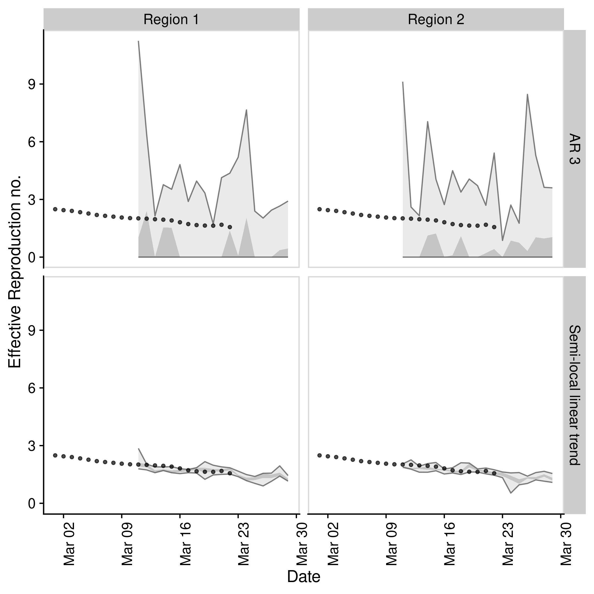
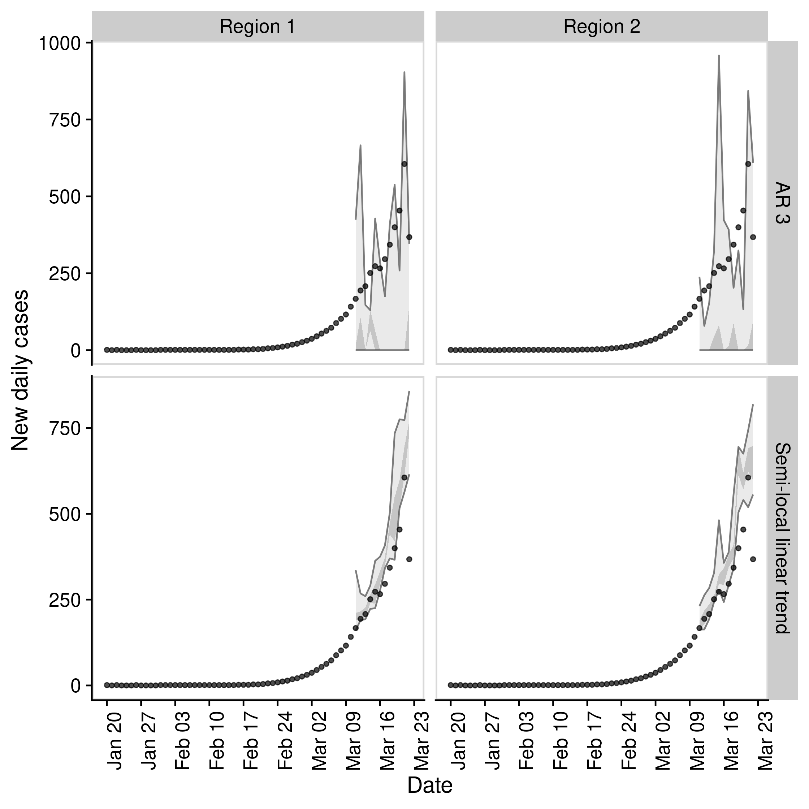

Aim: To forecast the time-varying reproduction number and use this to forecast reported case counts.
Installation
Install the stable version of the package using {drat}:
install.packages("drat") drat::add("epiforecasts") install.packages("EpiSoon")
Install the development version of the package with:
remotes::install_github("epiforecasts/EpiSoon")
Quick start
- Load packages (
bstsandfablefor models,ggplot2for plotting, andcowplotfor theming)
library(EpiSoon) library(bsts) library(fable) #> Warning in system("timedatectl", intern = TRUE): running command 'timedatectl' #> had status 1 library(future) library(cowplot) library(dplyr)
- Set up example data (using
EpiSoon::example_obs_rtsandEpiSoon::example_obs_casesas starting data sets). When generating timeseries withEpiNowuseget_timeseriesto extract the required data.
obs_rts <- EpiSoon::example_obs_rts %>% dplyr::mutate(timeseries = "Region 1") %>% dplyr::bind_rows(EpiSoon::example_obs_rts %>% dplyr::mutate(timeseries = "Region 2")) obs_cases <- EpiSoon::example_obs_cases %>% dplyr::mutate(timeseries = "Region 1") %>% dplyr::bind_rows(EpiSoon::example_obs_cases %>% dplyr::mutate(timeseries = "Region 2"))
- Define the list of models to be compared.
models <- list("AR 3" = function(...) {EpiSoon::bsts_model(model = function(ss, y){bsts::AddAr(ss, y = y, lags = 3)}, ...)}, "Semi-local linear trend" = function(...) {EpiSoon::bsts_model(model = function(ss, y){bsts::AddSemilocalLinearTrend(ss, y = y)}, ...)}, "ARIMA" = function(...){EpiSoon::fable_model(model = fable::ARIMA(y ~ time), ...)})
- Compare models across timeseries (change the
future::planto do this in parallel).
future::plan("sequential") ## Compare models forecasts <- EpiSoon::compare_timeseries(obs_rts, obs_cases, models, horizon = 7, samples = 10, serial_interval = EpiSoon::example_serial_interval) #> Warning: Unknown or uninitialised column: `sample`. #> Warning: Unknown or uninitialised column: `sample`. forecasts #> $forecast_rts #> # A tibble: 532 x 12 #> timeseries model forecast_date date horizon median mean sd bottom #> <chr> <chr> <chr> <date> <int> <dbl> <dbl> <dbl> <dbl> #> 1 Region 1 AR 3 2020-03-04 2020-03-05 1 1.60 1.63 1.77 0 #> 2 Region 1 AR 3 2020-03-04 2020-03-06 2 0.0328 1.22 2.52 0 #> 3 Region 1 AR 3 2020-03-04 2020-03-07 3 0.0452 0.901 1.48 0 #> 4 Region 1 AR 3 2020-03-04 2020-03-08 4 0 0.433 1.02 0 #> 5 Region 1 AR 3 2020-03-04 2020-03-09 5 0.641 1.62 2.33 0 #> 6 Region 1 AR 3 2020-03-04 2020-03-10 6 1.33 1.99 2.55 0 #> 7 Region 1 AR 3 2020-03-04 2020-03-11 7 1.36 2.72 3.59 0 #> 8 Region 1 AR 3 2020-03-05 2020-03-06 1 0.484 1.19 1.51 0 #> 9 Region 1 AR 3 2020-03-05 2020-03-07 2 0 0.850 2.25 0 #> 10 Region 1 AR 3 2020-03-05 2020-03-08 3 0.796 1.14 1.31 0 #> # … with 522 more rows, and 3 more variables: lower <dbl>, upper <dbl>, #> # top <dbl> #> #> $rt_scores #> # A tibble: 420 x 14 #> timeseries model forecast_date date horizon dss crps logs bias #> <chr> <chr> <chr> <date> <int> <dbl> <dbl> <dbl> <dbl> #> 1 Region 1 AR 3 2020-03-04 2020-03-05 1 1.19 0.668 1.84 -0.6 #> 2 Region 1 AR 3 2020-03-04 2020-03-06 2 1.91 1.38 17.6 -0.6 #> 3 Region 1 AR 3 2020-03-04 2020-03-07 3 1.46 1.06 2.20 -0.6 #> 4 Region 1 AR 3 2020-03-04 2020-03-08 4 2.91 1.51 Inf -0.8 #> 5 Region 1 AR 3 2020-03-04 2020-03-09 5 1.62 0.722 1.88 -0.400 #> 6 Region 1 AR 3 2020-03-04 2020-03-10 6 1.77 0.632 1.85 -0.200 #> 7 Region 1 AR 3 2020-03-04 2020-03-11 7 2.49 0.736 1.91 -0.400 #> 8 Region 1 AR 3 2020-03-05 2020-03-06 1 1.21 0.867 2.06 -0.6 #> 9 Region 1 AR 3 2020-03-05 2020-03-07 2 1.88 1.58 57.4 -0.8 #> 10 Region 1 AR 3 2020-03-05 2020-03-08 3 1.04 0.690 1.69 -0.6 #> # … with 410 more rows, and 5 more variables: sharpness <dbl>, #> # calibration <dbl>, median <dbl>, iqr <dbl>, ci <dbl> #> #> $forecast_cases #> # A tibble: 420 x 12 #> timeseries model forecast_date date horizon median mean sd bottom #> <chr> <chr> <chr> <date> <int> <dbl> <dbl> <dbl> <dbl> #> 1 Region 1 AR 3 2020-03-04 2020-03-05 1 48 48.9 50.1 0 #> 2 Region 1 AR 3 2020-03-04 2020-03-06 2 1 47.8 100. 0 #> 3 Region 1 AR 3 2020-03-04 2020-03-07 3 3.5 33.5 54.6 0 #> 4 Region 1 AR 3 2020-03-04 2020-03-08 4 0 15.4 36.0 0 #> 5 Region 1 AR 3 2020-03-04 2020-03-09 5 27.5 81.1 158. 0 #> 6 Region 1 AR 3 2020-03-04 2020-03-10 6 15.5 60.7 110. 0 #> 7 Region 1 AR 3 2020-03-04 2020-03-11 7 53.5 126. 202. 0 #> 8 Region 1 AR 3 2020-03-05 2020-03-06 1 20 44.9 56.9 0 #> 9 Region 1 AR 3 2020-03-05 2020-03-07 2 0 34.5 86.3 0 #> 10 Region 1 AR 3 2020-03-05 2020-03-08 3 37 41.4 44.2 0 #> # … with 410 more rows, and 3 more variables: lower <dbl>, upper <dbl>, #> # top <dbl> #> #> $case_scores #> # A tibble: 420 x 15 #> timeseries model sample forecast_date date horizon dss crps logs #> <chr> <chr> <chr> <chr> <date> <int> <dbl> <dbl> <dbl> #> 1 Region 1 AR 3 1 2020-03-04 2020-03-05 1 7.81 15.6 5.19 #> 2 Region 1 AR 3 1 2020-03-04 2020-03-06 2 9.18 44.8 11.3 #> 3 Region 1 AR 3 1 2020-03-04 2020-03-07 3 9.00 44.4 5.88 #> 4 Region 1 AR 3 1 2020-03-04 2020-03-08 4 13.5 75.2 Inf #> 5 Region 1 AR 3 1 2020-03-04 2020-03-09 5 10.1 55.1 6.24 #> 6 Region 1 AR 3 1 2020-03-04 2020-03-10 6 9.89 79.1 7.07 #> 7 Region 1 AR 3 1 2020-03-04 2020-03-11 7 10.6 72.0 6.72 #> 8 Region 1 AR 3 1 2020-03-05 2020-03-06 1 8.25 26.4 5.53 #> 9 Region 1 AR 3 1 2020-03-05 2020-03-07 2 9.24 62.3 29.9 #> 10 Region 1 AR 3 1 2020-03-05 2020-03-08 3 9.56 38.7 5.24 #> # … with 410 more rows, and 6 more variables: bias <dbl>, sharpness <dbl>, #> # calibration <dbl>, median <dbl>, iqr <dbl>, ci <dbl>
- Plot an evaluation of Rt forecasts using iterative fitting.
EpiSoon::plot_forecast_evaluation(forecasts$forecast_rts, obs_rts, c(7)) + ggplot2::facet_grid(model ~ timeseries) + cowplot::panel_border()

- Plot an evaluation of case forecasts using iterative fitting
EpiSoon::plot_forecast_evaluation(forecasts$forecast_cases, obs_cases, c(7)) + ggplot2::facet_grid(model ~ timeseries, scales = "free") + cowplot::panel_border()

- Summarise the forecasts by model scored against observed cases
EpiSoon::summarise_scores(forecasts$case_scores) #> # A tibble: 18 x 9 #> score model bottom lower median mean upper top sd #> <chr> <chr> <dbl> <dbl> <dbl> <dbl> <dbl> <dbl> <dbl> #> 1 bias AR 3 -1.00e+0 -8.00e-1 -7.50e-1 -0.652 -4.00e-1 -0.0450 0.261 #> 2 bias Semi… -1.00e+0 2.00e-1 8.00e-1 0.506 1.00e+0 1 0.580 #> 3 calib… AR 3 8.57e-5 8.57e-5 9.29e-5 0.0330 1.30e-2 0.192 0.101 #> 4 calib… Semi… 8.57e-5 8.57e-5 9.29e-5 0.0784 6.97e-2 0.594 0.158 #> 5 ci AR 3 1.39e+2 3.60e+2 5.77e+2 1209. 1.08e+3 7465. 1913. #> 6 ci Semi… 2.39e+1 5.14e+1 1.41e+2 978. 1.48e+3 4648. 1597. #> 7 crps AR 3 3.58e+1 8.00e+1 1.38e+2 150. 1.93e+2 410. 90.8 #> 8 crps Semi… 2.81e+0 6.44e+0 1.80e+1 42.0 7.24e+1 154. 49.9 #> 9 dss AR 3 8.95e+0 1.06e+1 1.18e+1 13.7 1.31e+1 34.6 8.75 #> 10 dss Semi… 4.74e+0 6.02e+0 8.03e+0 12.8 1.34e+1 55.9 13.4 #> 11 iqr AR 3 1.14e+2 3.45e+2 5.64e+2 665. 9.21e+2 1981. 448. #> 12 iqr Semi… 1.18e+1 2.78e+1 8.16e+1 183. 3.30e+2 643. 215. #> 13 logs AR 3 5.73e+0 6.66e+0 7.24e+0 Inf 8.73e+0 Inf Inf #> 14 logs Semi… 3.24e+0 4.10e+0 4.89e+0 10.1 7.26e+0 56.0 22.9 #> 15 median AR 3 5.92e+1 2.51e+2 4.17e+2 464. 5.96e+2 1211 276. #> 16 median Semi… 1.00e+0 1.80e+1 5.00e+1 102. 1.91e+2 357. 114. #> 17 sharp… AR 3 0. 0. 1.89e+1 63.6 6.88e+1 343. 108. #> 18 sharp… Semi… 6.84e+0 1.13e+1 2.00e+1 26.0 3.54e+1 81.3 19.5
Docker
This package was developed in a docker container based on the rocker/geospatial docker image.
To build the docker image run (from the EpiSoon directory):
To run the docker image run:
The rstudio client can be found on port :8787 at your local machines ip. The default username:password is epinow:epinow, set the user with -e USER=username, and the password with - e PASSWORD=newpasswordhere. The default is to save the analysis files into the user directory.
To mount a folder (from your current working directory - here assumed to be tmp) in the docker container to your local system use the following in the above docker run command (as given mounts the whole episoon directory to tmp).
To access the command line run the following: